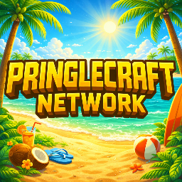
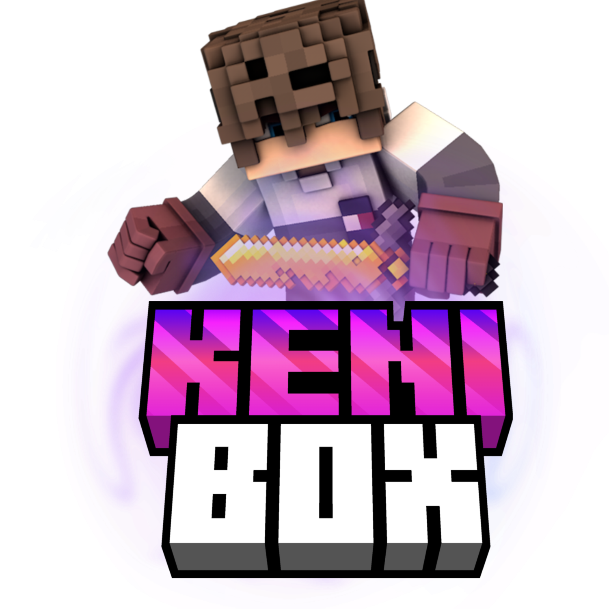
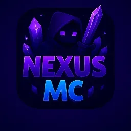
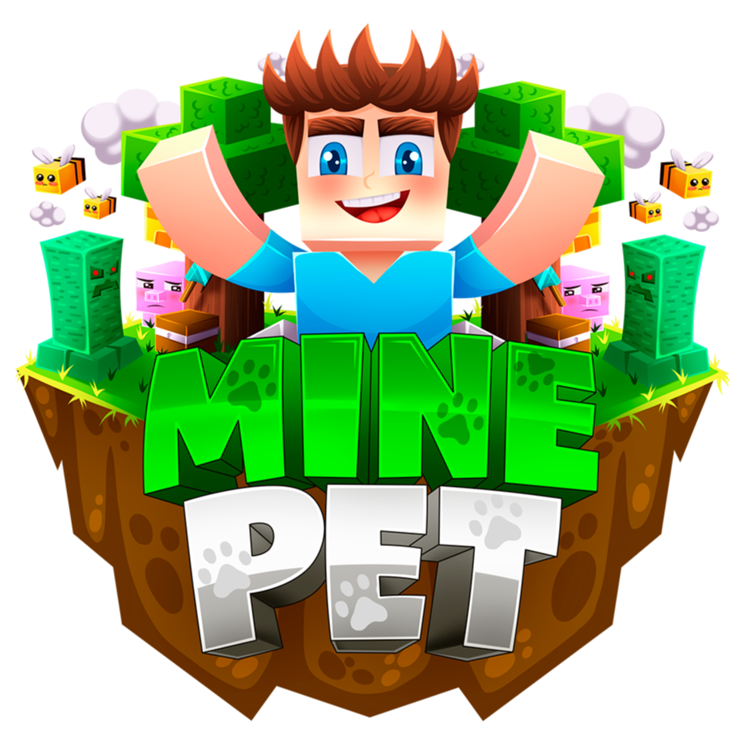

Mineblash
Status: Dev & Founder (Ex-staff)Entré como socio fundador apoyando en la parte económica y técnica (configs). A día de hoy sigo manteniendo el servidor como Developer principal.
Creador de Plugins & Network Developer especializado en BoxPvP / Lobbys / Builds
Ejecutando perfil profesional... Soy un desarrollador y staff con amplia experiencia en redes de Minecraft. Mi especialidad es la creación y optimización de entornos BoxPvP, Lobbys y Rangos Globales/ Baneos Globales. Experto en configuración avanzada de redes (Bungee/Velocity) y desarrollo de soluciones técnicas bajo entornos de alta carga de usuarios.
Entré como socio fundador apoyando en la parte económica y técnica (configs). A día de hoy sigo manteniendo el servidor como Developer principal.

Me aceptaron por mi capacidad técnica tras revisar mi portafolio. Actualmente gestiono las configuraciones y resuelvo tickets técnicos.

Ascenso meteórico de Helper a Admin. Realicé más de 1,432 baneos en 2 meses, encargándome de revisar sanciones y apoyar en nuevas modalidades.

He ayudado trabajando en el arreglo de bugs y creación de selectores de modalidades. Aporto soluciones técnicas constantes al equipo.
Salida voluntaria debido a mal ambiente laboral y falta de ética del fundador. Me sirvió como experiencia para aprender a proteger mi trabajo.

3 meses de trabajo sólido en desarrollo técnico hasta una salida injustificada por parte del dueño. Mantengo el conocimiento adquirido en este tiempo.

Comenze como Developer y me convertí en Owner. Aporté soluciones técnicas y lideré el desarrollo del servidor.

Desarrollo de configuraciones personalizados para Valkyrian, incluyendo sistemas de rangos globales y gestión de plugins.

Desarrollo de mapas y estructuras personalizadas, adaptadas completamente a los requisitos y preferencias del servidor.